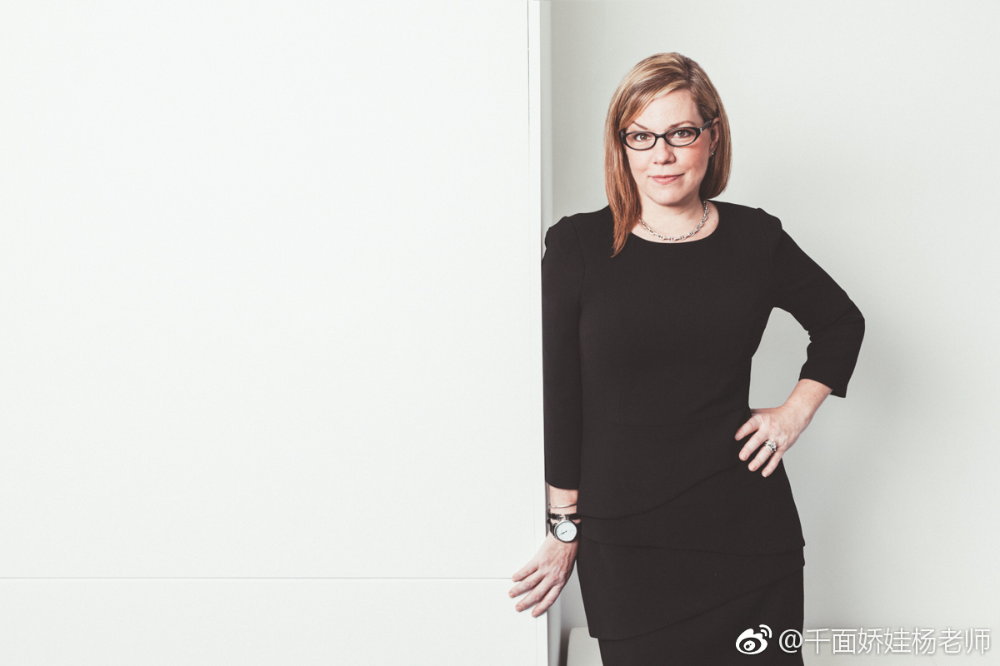

@一杨ish:
今天早上看Debbie Millman做了一个关于品牌设计理念的presentation. 每一年要听很多的preso，但这是一个让人很服气的演讲，把我之前想到一些并不能很好表述的杂乱观点点拨得很透彻。给不熟悉Debbie Millman的人，大致介绍一下她的背景，这位女士是全球品牌设计、品牌管理领域的真正教母级人物，史上最成功的Podcast节目之一<Design Matters>就是出自她手。
整个presentation的观点密度很大，我也不好意思全拿着人家的想法来微博做二手生意。但其中一个，讲到了品牌的意义到底是什么？我认为她今天给出的解释是我听到最鞭辟入里的：
“品牌能转换为归属感，拥有它会让你自动属于一个群落，一个宗教，一个家庭。品牌的存在能让这种'归属的感觉'具象：让不管属于这个群体的人，还是不属于这个群体的人，都能真实地感受得到自己有没有这种'归属感'。”
'Branding turns into belonging: belonging to a tribe, to a religion, to a family. Branding demonstrates that sense of belonging for both the people who are part of the same group and also for the people who do not belong.'
不得不感叹learn from the best，真是成长最有效的捷径。
整个presentation的观点密度很大，我也不好意思全拿着人家的想法来微博做二手生意。但其中一个，讲到了品牌的意义到底是什么？我认为她今天给出的解释是我听到最鞭辟入里的：
“品牌能转换为归属感，拥有它会让你自动属于一个群落，一个宗教，一个家庭。品牌的存在能让这种'归属的感觉'具象：让不管属于这个群体的人，还是不属于这个群体的人，都能真实地感受得到自己有没有这种'归属感'。”
'Branding turns into belonging: belonging to a tribe, to a religion, to a family. Branding demonstrates that sense of belonging for both the people who are part of the same group and also for the people who do not belong.'
不得不感叹learn from the best，真是成长最有效的捷径。
- 